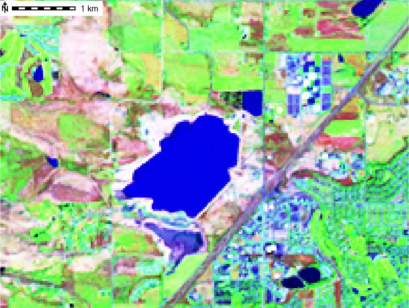
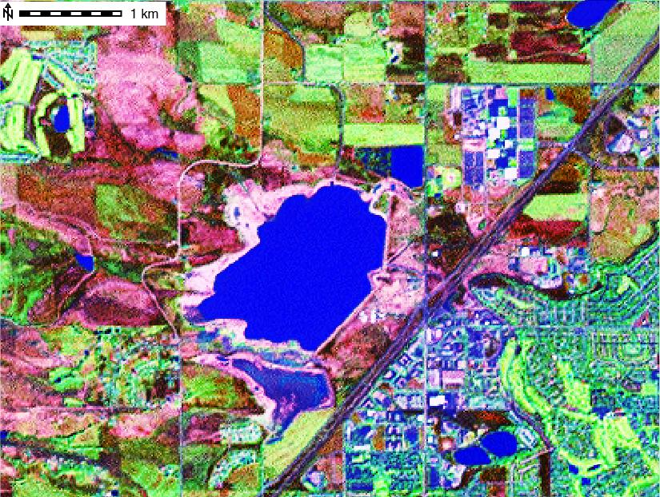
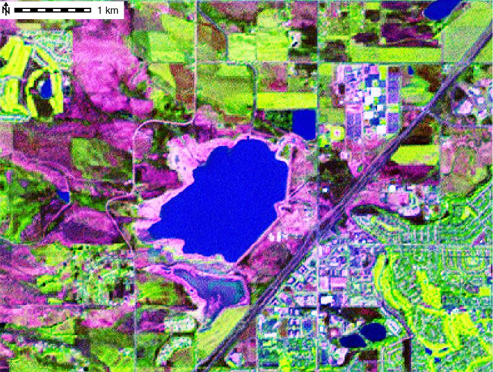

DESCRIPTION
i.pansharpen uses a high resolution panchromatic band from a
multispectral image to sharpen 3 lower resolution bands. The 3
lower resolution bands can then be combined into an RGB color image at a
higher (more detailed) resolution than is possible using the original 3
bands. For example, Landsat ETM has low resolution spectral bands 1 (blue),
2 (green), 3 (red), 4 (near IR), 5 (mid-IR), and 7 (mid-IR) at 30m resolution,
and a high resolution panchromatic band 8 at 15m resolution. Pan sharpening
allows bands 3-2-1 (or other combinations of 30m resolution bands like 4-3-2
or 5-4-2) to be combined into a 15m resolution color image.
i.pansharpen offers a choice of three different 'pan sharpening'
algorithms: IHS, Brovey, and PCA.
For IHS pan sharpening, the original 3 lower resolution bands, selected
as red, green and blue channels for creating an RGB composite image, are
transformed into IHS (intensity, hue, and saturation) color space. The
panchromatic band is then substituted for the intensity channel (I), combined
with the original hue (H) and saturation (S) channels, and transformed back to
RGB color space at the higher resolution of the panchromatic band. The
algorithm for this can be represented as: RGB -> IHS -> [pan]HS -> RGB.
With a Brovey pan sharpening, each of the 3 lower resolution bands and
panchromatic band are combined using the following algorithm to calculate
3 new bands at the higher resolution (example for band 1):
band1
new band1 = ----------------------- * panband
band1 + band2 + band3
In PCA pan sharpening, a principal component analysis is performed on the
original 3 lower resolution bands to create 3 principal component images
(PC1, PC2, and PC3) and their associated eigenvectors (EV), such that:
band1 band2 band3
PC1: EV1-1 EV1-2 EV1-3
PC2: EV2-1 EV2-2 EV2-3
PC3: EV3-1 EV3-2 EV3-3
and
PC1 = EV1-1 * band1 + EV1-2 * band2 + EV1-3 * band3 - mean(bands 1,2,3)
An inverse PCA is then performed, substituting the panchromatic band for PC1.
To do this, the eigenvectors matrix is inverted (in this case transposed), the
PC images are multiplied by the eigenvectors with the panchromatic band
substituted for PC1, and mean of each band is added to each transformed image
band using the following algorithm (example for band 1):
band1 = pan * EV1-1 + PC2 * EV1-2 + PC3 * EV1-3 + mean(band1)
The assignment of the channels depends on the satellite. Examples of satellite
imagery with high resolution panchromatic bands, and lower resolution spectral
bands include Landsat 7 ETM, QuickBird, and SPOT.
NOTES
The module works for 2-bit to 30-bit images. All images are rescaled to 8-bit
for processing. By default, the entire possible range for the selected bit depth is
rescaled to 8-bit. For example, the range of 0-65535 for a 16-bit image is
rescaled to 0-255). The 'r' flag allows the range of pixel values actually
present in an image rescaled to a full 8-bit range. For example, a 16 bit image
might only have pixels that range from 70 to 35000; this range of 70-35000 would
be rescaled to 0-255. This can give better visual distinction to features,
especially when the range of actual values in an image only occupies a
relatively limited portion of the possible range.
i.pansharpen temporarily changes the computational region to the high
resolution of the panchromatic band during sharpening calculations, then
restores the previous region settings. The current region coordinates (and
null values) are respected. The high resolution panchromatic image is
histogram matched to the band it is replaces prior to substitution (i.e., the
intensity channel for IHS sharpening, the low res band selected for each color
channel with Brovey sharpening, and the PC1 image for PCA sharpening).
By default, the command will attempt to employ parallel processing, using
up to 3 cores simultaneously. The -s flag will disable parallel processing,
but does use an optimized r.mapcalc expression to reduce disk I/O.
The three pan-sharpened output channels may be combined with d.rgb or
r.composite. Colors may be optionally optimized with i.colors.enhance.
While the resulting color image will be at the higher resolution in all cases,
the 3 pan sharpening algorithms differ in terms of spectral response.
EXAMPLES
Pan sharpening of LANDSAT ETM+ (Landsat 7)
LANDSAT ETM+ (Landsat 7), North Carolina sample dataset, PCA method:
# original at 28m
g.region raster=lsat7_2002_10 -p
d.mon wx0
d.rgb b=lsat7_2002_10 g=lsat7_2002_20 r=lsat7_2002_30
# i.pansharpen with PCA algorithm
i.pansharpen red=lsat7_2002_30 \
green=lsat7_2002_20 blue=lsat7_2002_10 \
pan=lsat7_2002_80 method=pca \
output=lsat7_2002_15m_pca -l
# color enhance
i.colors.enhance blue=lsat7_2002_15m_pca_blue \
green=lsat7_2002_15m_pca_green red=lsat7_2002_15m_pca_red
# display at 14.25m, IHS pansharpened
g.region raster=lsat7_2002_15m_pca_red -p
d.erase
d.rgb b=lsat7_2002_15m_pca_blue g=lsat7_2002_15m_pca_green r=lsat7_2002_15m_pca_red
LANDSAT ETM+ (Landsat 7), North Carolina sample dataset, IHS method:
# original at 28m
g.region raster=lsat7_2002_10 -p
d.mon wx0
d.rgb b=lsat7_2002_10 g=lsat7_2002_20 r=lsat7_2002_30
# i.pansharpen with IHS algorithm
i.pansharpen red=lsat7_2002_30 \
green=lsat7_2002_20 blue=lsat7_2002_10 \
pan=lsat7_2002_80 method=ihs \
output=lsat7_2002_15m_ihs -l
# color enhance
i.colors.enhance blue=lsat7_2002_15m_ihs_blue \
green=lsat7_2002_15m_ihs_green red=lsat7_2002_15m_ihs_red
# display at 14.25m, IHS pansharpened
g.region raster=lsat7_2002_15m_ihs_red -p
d.erase
d.rgb b=lsat7_2002_15m_ihs_blue g=lsat7_2002_15m_ihs_green r=lsat7_2002_15m_ihs_red
# compare before/after (RGB support under "Advanced"):
g.gui.mapswipe
Pan sharpening comparison example
Pan sharpening of a Landsat image from Boulder, Colorado, USA
(LANDSAT ETM+ [Landsat 7] spectral bands 5,4,2, and pan band 8):
# R, G, B composite at 30m
g.region raster=p034r032_7dt20010924_z13_20 -p
d.rgb b=p034r032_7dt20010924_z13_20 g=lp034r032_7dt20010924_z13_40
r=p034r032_7dt20010924_z13_50
# i.pansharpen with IHS algorithm
i.pansharpen red=p034r032_7dt20010924_z13_50 green=p034r032_7dt20010924_z13_40
blue=p034r032_7dt20010924_z13_20 pan=p034r032_7dp20010924_z13_80
output=ihs321 method=ihs
# ... likewise with method=brovey and method=pca
# display at 15m
g.region raster=ihs542_blue -p
d.rgb b=ihs542_blue g=ihs542_green r=ihs542_red
Results:

R, G, B composite of Landsat at 30m
|

R, G, B composite of Brovey sharpened image at 15m
|

R, G, B composite of IHS sharpened image at 15m
|

R, G, B composite of PCA sharpened image at 15m"
|
SEE ALSO
i.his.rgb,
i.rgb.his,
i.pca,
d.rgb,
r.composite
REFERENCES
- Original Brovey formula reference unknown, probably...
Roller, N.E.G. and Cox, S., (1980). Comparison of Landsat MSS
and merged MSS/RBV data for analysis of natural vegetation.
Proc. of the 14th International Symposium on Remote Sensing
of Environment, San Jose, Costa Rica, 23-30 April, pp. 1001-1007
- Amarsaikhan, D., Douglas, T. (2004). Data fusion and multisource image
classification. International Journal of Remote Sensing, 25(17), 3529-3539.
- Behnia, P. (2005). Comparison between four methods for data fusion of ETM+
multispectral and pan images. Geo-spatial Information Science, 8(2), 98-103.
- Du, Q., Younan, N. H., King, R., Shah, V. P. (2007). On the Performance
Evaluation of Pan-Sharpening Techniques. Geoscience and Remote Sensing
Letters, IEEE, 4(4), 518-522.
- Karathanassi, V., Kolokousis, P., Ioannidou, S. (2007). A comparison
study on fusion methods using evaluation indicators. International Journal
of Remote Sensing, 28(10), 2309-2341.
- Neteler, M, D. Grasso, I. Michelazzi, L. Miori, S. Merler, and C.
Furlanello (2005). An integrated toolbox for image registration, fusion and
classification. International Journal of Geoinformatics, 1(1):51-61
(PDF)
- Pohl, C, and J.L van Genderen (1998). Multisensor image fusion in remote
sensing: concepts, methods and application. Int. J. of Rem. Sens., 19, 823-854.
AUTHORS
Michael Barton (Arizona State University, USA)
with contributions from Markus Neteler (ITC-irst, Italy); Glynn Clements;
Luca Delucchi (Fondazione E. Mach, Italy); Markus Metz; and Hamish Bowman.